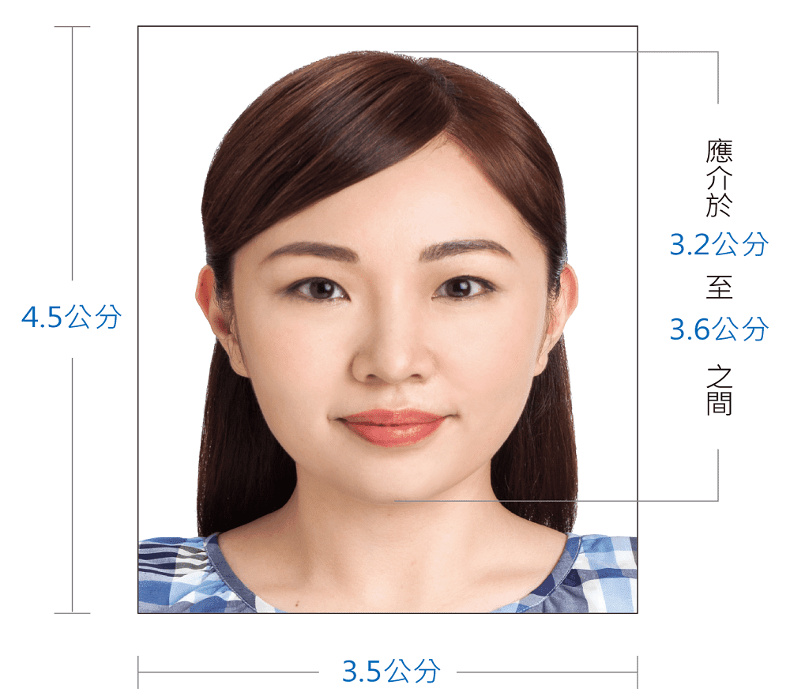

:::
07
預約成功通知
申請人 1：張大毛
申請人 2：張二毛
申請人 3：張三毛
申請人 4：張四毛
說明事項
- 您已成功網路預約申辦護照時間且系統已發送預約成功通知信至您的電子郵件信箱。此預約為當天有效，請務必於預約時間內辦理報到，以免影響您的權益
- 為確保國人旅外通關之便利，申請人數位照片雖已上傳成功，如果上傳的照片於臨櫃遞件時，經再次審查不符「晶片護照照片規格」相關規定，或經外交部領事事務局及四個辦事處護製系統處理後如影像品質未達國際民航組織標準或上傳不合格照片(例如：使用非6個月內近照等等…)不合格情形，仍可能再請護照申請人重新繳交合格的照片。
- 申辦過程中，請留意您的電話及電子信箱，以免漏接收申請案件之補正訊息通知，致您的權益受損。
- 如果申請人上網填寫的資料或上傳的照片有更改，請務必重新列印簡表，倘誤用舊簡表，因資料已遭覆蓋，外交部領事事務局及四個辦事處將無法帶出正確的數位照片及資料檔案，故無法受理您的申請。
以下為您的預約資料：建議將此頁列印參考，以便辦理報到
| 報到時段 |
2021年10月26日(星期二) 12:00-12:30 此為您的報到時間，當日需視現場人數報到情況，依序辦理申請案件 |
|---|---|
| 送件地點 |
外交部領事事務局（100219臺北市中正區濟南路一段2之2號1樓） ＊網路預約申辦護照者，請先至1樓大廳後方之第①號公共事務機（KIOSK）報到、取號後，再搭乘電扶梯至3樓大廳送件。 |
| 護照申請人 | 王O明 |
| 辦理方式 | 親自辦理 |
報到時請攜帶以下資料
| ※ | 新式國民身分證正本（未成年人或受監護宣告之人尚須攜帶其法定代理人之新式國民身分證正本） |
|---|---|
| ※ | 白底彩色照片2張：須為最近6個月內拍攝之照片（直4.5公分且橫3.5公分，頭到下巴3.2公分），其他請參閱晶片護照相片規格 |
| ※ | 列印填妥之簡式護照資料表正本（已隨本確認信以附加檔案方式寄至您的電子郵件信箱） |
| ※ | 變更護照外文姓名/外文別名，須繳付證明文件 |
| ※ | 尚有效期之舊護照 |
報到時請詳閱以下須知，並備妥應備文件
| ※ | 在臺有戶籍國民在國內首次申請普通護照說明書 |
|---|---|
| ※ | 國內申辦護照相關資訊 |
| ※ | 晶片護照相片規格 |
| ※ | 晶片護照相片範例  |
外交部領事事務局局本部
| 地址 | 100219臺北市中正區濟南路一段2之2號1樓 ＊網路預約申辦護照者，請先至1樓大廳後方之第①號公共事務機（KIOSK）報到、取號後，再搭乘電扶梯至3樓大廳送件。 |
|---|---|
| 電話 | 02-23432888 |
| 地圖 | GoogleMap |
| 相關地址資訊 |
說明事項
- ...
- ...
- ...
說明事項
- ...
- ...
- ...
說明事項
- ...
- ...
- ...